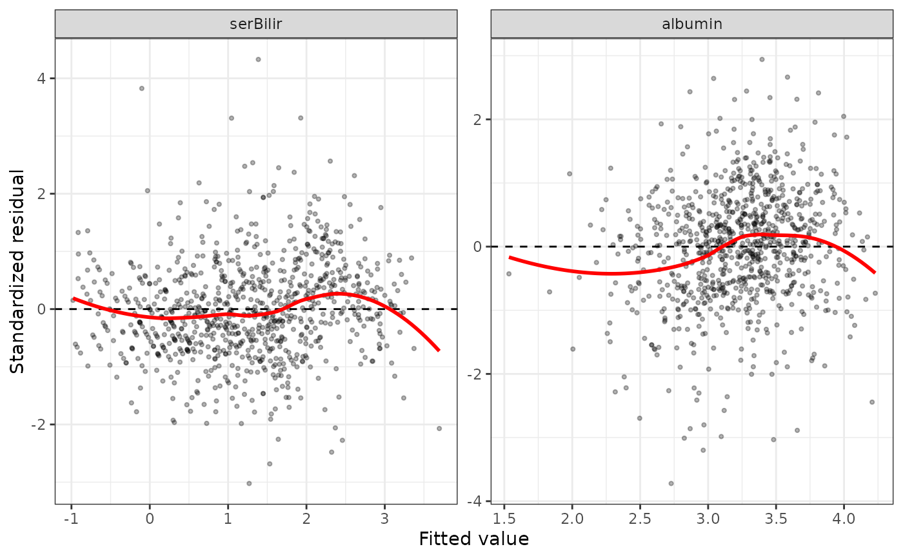
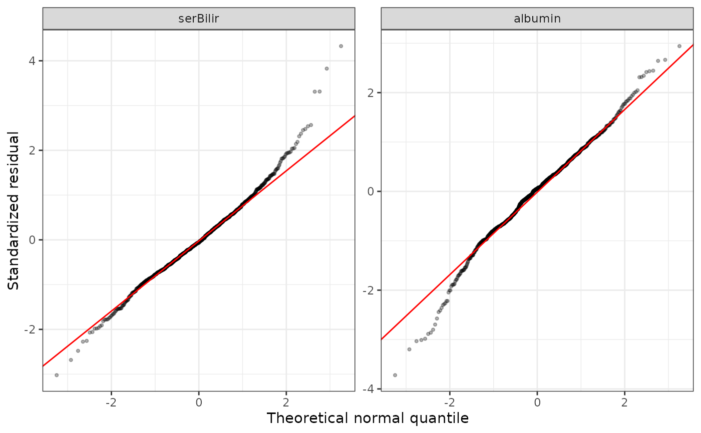
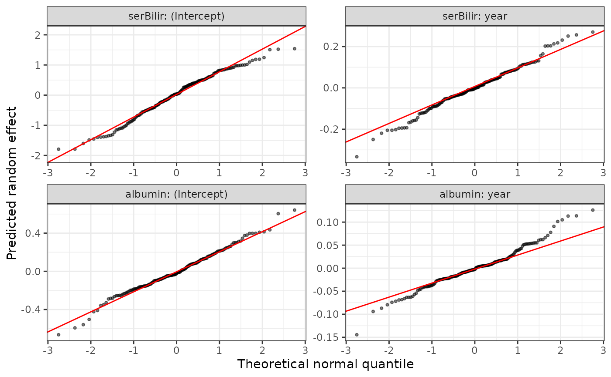
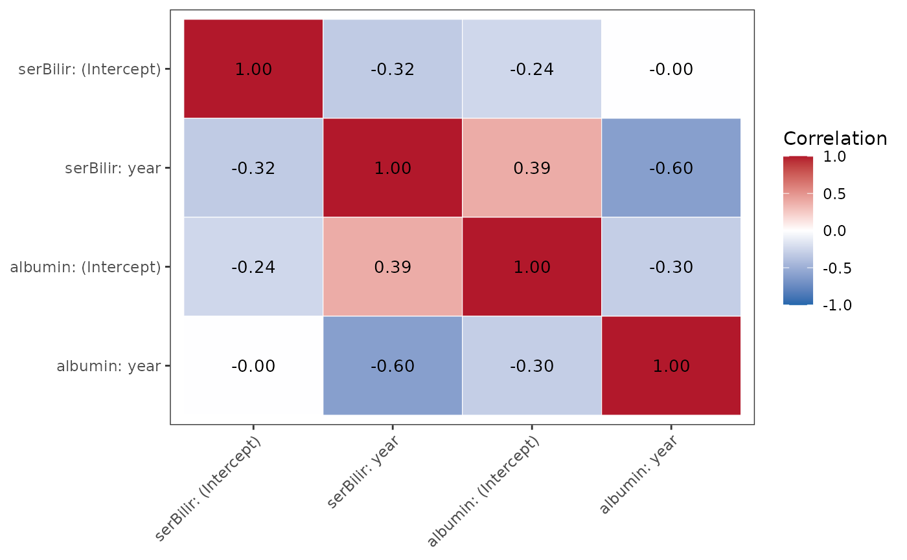

Diagnostic plots for the per-biomarker mixed models and the shared
random-effects covariance of a longitudinalSub fit, one
panel per biomarker:
"residuals"Standardized (Pearson) residuals against fitted values, with a LOESS smoother; a trend or a funnel shape suggests a misspecified mean or non-constant variance.
"qq"Normal Q-Q plot of the standardized residuals.
"ranef"Normal Q-Q plot of each predicted random effect (the model assumes they are normal).
"corr"Heat map of the correlation matrix of the multivariate random-effects covariance
Sigma_fit, i.e. how the subject-level deviations of the different biomarkers move together.
Residual plots are drawn for continuous biomarkers only; an ordinal
biomarker (fit by ordinal::clmm()) has no residuals on the
response scale and is left out of them with a message.
Arguments
- x
A
longitudinalSub.BJMobject returned bylongitudinalSub.- which
Which plot to draw:
"residuals"(default),"qq","ranef"or"corr".- ...
Currently unused.
Examples
# \donttest{
data(pbc3)
long_sub_fixed <- list("long1" = serBilir ~ year + age + sex + years,
"long2" = albumin ~ year + age + sex + years)
long_sub_random <- list("long1" = ~ year | id, "long2" = ~ year | id)
data_fit <- pbc3[pbc3$status3 == 1, ]
long_fit_all <- longitudinalSub(list(data_fit, data_fit), long_sub_fixed, long_sub_random)
plot(long_fit_all)

plot(long_fit_all, which = "qq")

plot(long_fit_all, which = "ranef")

plot(long_fit_all, which = "corr")

# }